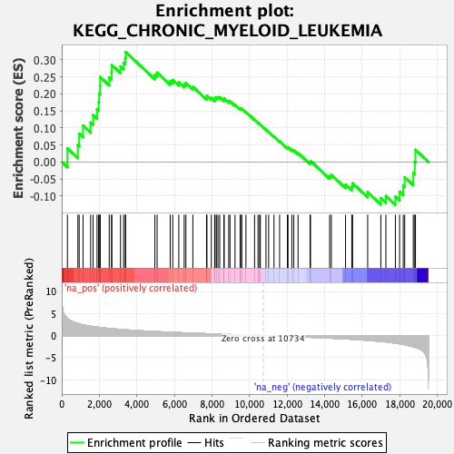
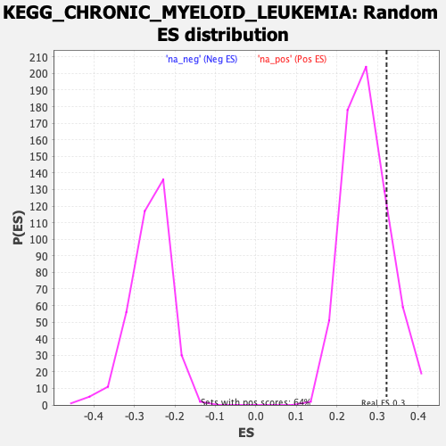

| | | Dataset | PFS |
| Phenotype | NoPhenotypeAvailable |
| Upregulated in class | na_pos |
| GeneSet | KEGG_CHRONIC_MYELOID_LEUKEMIA |
| Enrichment Score (ES) | 0.32246557 |
| Normalized Enrichment Score (NES) | 1.1805011 |
| Nominal p-value | 0.18224299 |
| FDR q-value | 1.0 |
| FWER p-Value | 1.0 |
Table: GSEA Results Summary

Fig 1: Enrichment plot: KEGG_CHRONIC_MYELOID_LEUKEMIA
Profile of the Running ES Score & Positions of GeneSet Members on the Rank Ordered List
| SYMBOL | RANK IN GENE LIST | RANK METRIC SCORE | RUNNING ES | CORE ENRICHMENT | | 1 | STAT5B | 303 | 3.934 | 0.0395 | Yes |
| 2 | TP53 | 860 | 2.734 | 0.0492 | Yes |
| 3 | RB1 | 928 | 2.657 | 0.0830 | Yes |
| 4 | GAB2 | 1134 | 2.434 | 0.1065 | Yes |
| 5 | SHC1 | 1539 | 2.124 | 0.1155 | Yes |
| 6 | KRAS | 1670 | 2.042 | 0.1374 | Yes |
| 7 | NFKB1 | 1880 | 1.931 | 0.1537 | Yes |
| 8 | MAP2K1 | 1965 | 1.888 | 0.1759 | Yes |
| 9 | RELA | 1990 | 1.870 | 0.2008 | Yes |
| 10 | PIK3CA | 2042 | 1.840 | 0.2240 | Yes |
| 11 | CDKN1A | 2047 | 1.837 | 0.2495 | Yes |
| 12 | CBL | 2528 | 1.625 | 0.2476 | Yes |
| 13 | SHC3 | 2653 | 1.578 | 0.2633 | Yes |
| 14 | CTBP1 | 2666 | 1.573 | 0.2847 | Yes |
| 15 | MAPK3 | 3129 | 1.402 | 0.2806 | Yes |
| 16 | MAPK1 | 3295 | 1.352 | 0.2910 | Yes |
| 17 | CDKN1B | 3385 | 1.327 | 0.3051 | Yes |
| 18 | PIK3CB | 3407 | 1.320 | 0.3225 | Yes |
| 19 | BCR | 4958 | 0.926 | 0.2558 | No |
| 20 | PIK3R5 | 5078 | 0.904 | 0.2623 | No |
| 21 | MECOM | 5776 | 0.765 | 0.2372 | No |
| 22 | E2F2 | 5911 | 0.741 | 0.2407 | No |
| 23 | PIK3R1 | 6233 | 0.678 | 0.2337 | No |
| 24 | AKT2 | 6520 | 0.629 | 0.2278 | No |
| 25 | SMAD3 | 6611 | 0.616 | 0.2318 | No |
| 26 | E2F1 | 6982 | 0.552 | 0.2205 | No |
| 27 | MYC | 7711 | 0.434 | 0.1891 | No |
| 28 | CHUK | 7732 | 0.431 | 0.1941 | No |
| 29 | ARAF | 7964 | 0.397 | 0.1878 | No |
| 30 | MAP2K2 | 8143 | 0.373 | 0.1839 | No |
| 31 | TGFBR2 | 8165 | 0.369 | 0.1880 | No |
| 32 | AKT1 | 8237 | 0.360 | 0.1894 | No |
| 33 | NFKBIA | 8320 | 0.348 | 0.1900 | No |
| 34 | IKBKB | 8413 | 0.333 | 0.1900 | No |
| 35 | CDKN2A | 8640 | 0.304 | 0.1826 | No |
| 36 | PIK3CD | 8646 | 0.302 | 0.1866 | No |
| 37 | NRAS | 8890 | 0.265 | 0.1778 | No |
| 38 | PIK3CG | 8961 | 0.256 | 0.1778 | No |
| 39 | TGFB3 | 9227 | 0.217 | 0.1672 | No |
| 40 | TGFBR1 | 9498 | 0.177 | 0.1558 | No |
| 41 | SHC4 | 9525 | 0.173 | 0.1569 | No |
| 42 | BRAF | 9588 | 0.163 | 0.1560 | No |
| 43 | AKT3 | 9809 | 0.129 | 0.1465 | No |
| 44 | PTPN11 | 10267 | 0.066 | 0.1239 | No |
| 45 | HDAC1 | 10452 | 0.040 | 0.1150 | No |
| 46 | ABL1 | 10537 | 0.029 | 0.1111 | No |
| 47 | CBLC | 10576 | 0.023 | 0.1095 | No |
| 48 | BCL2L1 | 10875 | -0.018 | 0.0944 | No |
| 49 | MDM2 | 11017 | -0.038 | 0.0877 | No |
| 50 | HDAC2 | 11303 | -0.078 | 0.0741 | No |
| 51 | TGFB1 | 11600 | -0.121 | 0.0606 | No |
| 52 | CCND1 | 12014 | -0.187 | 0.0420 | No |
| 53 | CBLB | 12049 | -0.191 | 0.0429 | No |
| 54 | E2F3 | 12251 | -0.219 | 0.0357 | No |
| 55 | RAF1 | 12356 | -0.236 | 0.0336 | No |
| 56 | BAD | 12583 | -0.278 | 0.0259 | No |
| 57 | PIK3R3 | 13221 | -0.379 | -0.0015 | No |
| 58 | CDK6 | 13247 | -0.384 | 0.0026 | No |
| 59 | RUNX1 | 14266 | -0.566 | -0.0419 | No |
| 60 | PIK3R2 | 14355 | -0.580 | -0.0383 | No |
| 61 | CRKL | 15112 | -0.744 | -0.0667 | No |
| 62 | CDK4 | 15444 | -0.818 | -0.0723 | No |
| 63 | STAT5A | 15488 | -0.833 | -0.0628 | No |
| 64 | SOS1 | 16291 | -1.067 | -0.0891 | No |
| 65 | TGFB2 | 16991 | -1.323 | -0.1065 | No |
| 66 | IKBKG | 17260 | -1.436 | -0.1002 | No |
| 67 | SOS2 | 17766 | -1.712 | -0.1022 | No |
| 68 | CTBP2 | 17990 | -1.849 | -0.0877 | No |
| 69 | GRB2 | 18185 | -1.989 | -0.0699 | No |
| 70 | SHC2 | 18263 | -2.059 | -0.0450 | No |
| 71 | CRK | 18719 | -2.537 | -0.0329 | No |
| 72 | SMAD4 | 18797 | -2.620 | -0.0001 | No |
| 73 | HRAS | 18835 | -2.674 | 0.0354 | No |
Table: GSEA details [plain text format]

Fig 2: KEGG_CHRONIC_MYELOID_LEUKEMIA: Random ES distribution
Gene set null distribution of ES for KEGG_CHRONIC_MYELOID_LEUKEMIA